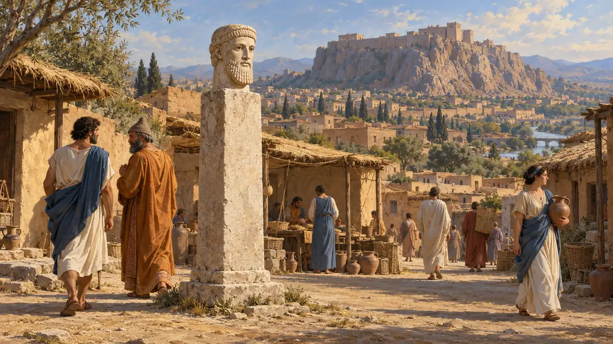
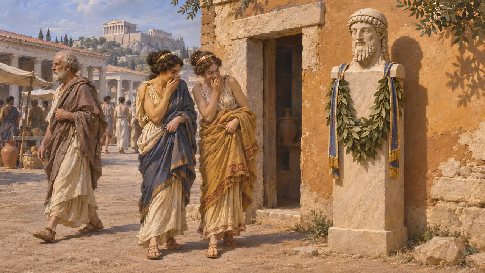
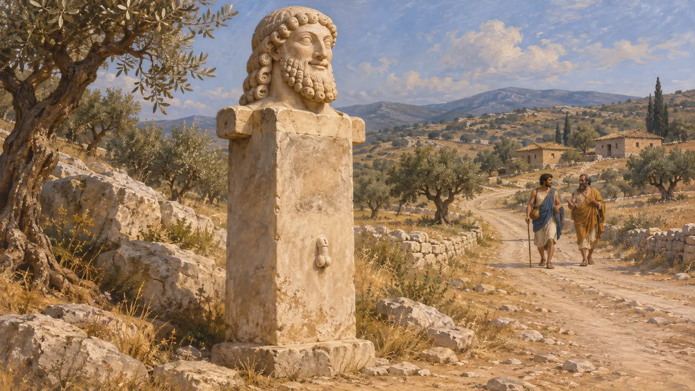
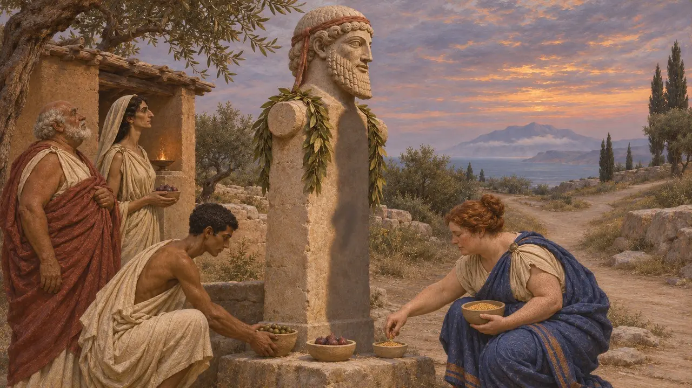
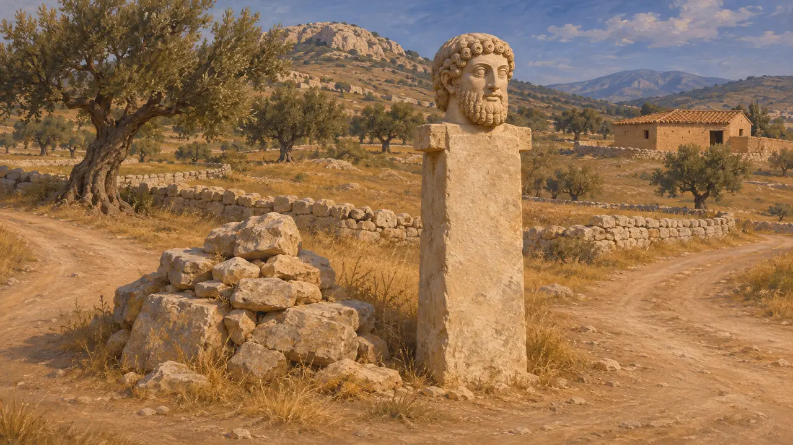
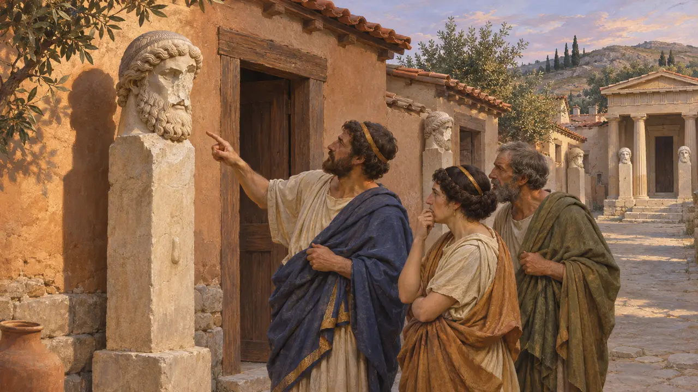

Hermès
Pilier d'Hermès au bord des routes et aux portes d'Athènes, à partir de 520 av. J.-C. environ
Un hermès était un pilier de pierre quadrangulaire surmonté de la tête barbue du dieu Hermès, protecteur des voyageurs et des limites. À Athènes et en Attique, on en dressa le long des routes dès la fin du VIe siècle, et au Ve siècle ils se tenaient aux carrefours, aux portes des villes et à celles des maisons. Ils étaient à la fois bornes routières, gardiens et objets de dévotion quotidienne, et devinrent l'un des spectacles les plus familiers d'une rue athénienne.
Dans le jeu : Dans les villes grecques, le jeu propose l'Hermès comme bâtiment d'habitat. Sa notice attribue les hermès routiers à l'Hipparque de Platon. Ce dialogue a été transmis sous le nom de Platon, mais la plupart des spécialistes doutent qu'il en soit l'auteur.

À quoi ressemblait un hermès
Dans les sourcesLes hermès archaïques et classiques conservés sont de simples piliers rectangulaires portant une tête sculptée d'Hermès barbu, souvent aux boucles stylisées. Beaucoup portaient aussi un sexe masculin sculpté sur la face avant et, aux épaules, de courts moignons carrés qui servaient peut-être à suspendre des couronnes ou des offrandes. Les fragments mis au jour lors des fouilles de l'Agora d'Athènes montrent qu'ils étaient courants dans les espaces publics de la cité.
E. B. Harrison, Archaic and Archaistic Sculpture (The Athenian Agora XI), 1965; R. Osborne, The Erection and Mutilation of the Hermai, 1985

Hipparque et les routes de l'Attique
Récit antiqueLe dialogue Hipparque rapporte qu'Hipparque, fils du tyran Pisistrate, fit dresser des hermès le long des routes de l'Attique. Chacun se trouvait à mi-chemin entre la ville et un village de la campagne, ou dème. Une face nommait le lieu, l'autre portait un court vers de conseil moral, comme une invitation à marcher avec des pensées justes. Hipparque fut tué en 514 av. J.-C. ; la série date donc probablement des années précédentes.
Plato (attributed), Hipparchus 228b-229b; Thucydides 6.54-59

Hérodote sur l'origine des hermès
Récit antiqueHérodote affirme que les Athéniens furent les premiers Grecs à sculpter des statues d'Hermès au phallus dressé. Il prétend qu'ils tenaient cette coutume des Pélasges, un peuple plus ancien de la Grèce, et la rattache aux mystères de Samothrace. Son explication reflète davantage les idées grecques sur le passé qu'une preuve solide de l'origine de ce type de statue.
Herodotus 2.51

Paternité et premiers hermès
ContestéL'Hipparque nous est parvenu parmi les œuvres de Platon, mais la plupart des spécialistes modernes l'attribuent à un autre auteur ; son récit des hermès routiers pourrait donc relever d'une tradition plus tardive. Les historiens débattent aussi de la question de savoir si Hipparque inventa la forme du pilier ou s'il adapta des bornes routières plus anciennes, comme les tas de pierres associés à Hermès. Un fragment d'hermès inscrit découvert dans la campagne attique est souvent rattaché à sa série, mais le lien n'est pas certain.
R. Osborne, The Erection and Mutilation of the Hermai, 1985

Des hermès à chaque porte
Récit antiqueThucydide montre combien les hermès s'étaient répandus à la fin du Ve siècle. Il rapporte qu'en 415 av. J.-C., juste avant l'expédition de Sicile, la plupart des hermès de pierre d'Athènes eurent le visage mutilé en une seule nuit. Il les décrit comme un élément traditionnel dressé à l'entrée des maisons particulières comme des sanctuaires, et l'attentat sema une vive inquiétude dans la cité.
Thucydides 6.27
Sources
- Plato (attributed), Hipparchus 228b-229b
- Herodotus 2.51
- Thucydides 6.27
- Thucydides 6.54-59
- R. Osborne, The Erection and Mutilation of the Hermai, 1985
- E. B. Harrison, Archaic and Archaistic Sculpture (The Athenian Agora XI), 1965